Roste müssen gegen Verschieben in Tragrichtung gesichert sein. Roste müssen in Bereichen, in denen Absturzgefahr oder die Gefahr des Hineinstürzens besteht, zusätzlich gegen Abheben gesichert sein.
Als Sicherung gegen Verschieben in Tragrichtung und Abheben müssen Gitterroste jeweils mindestens an ihren vier Eckpunkten (Abb. 13) formschlüssig befestigt sein.
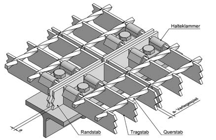
Abb. 13 Beispiel: Befestigung jeweils in einem Eckpunkt des Einzelrostes, mindestens vier Befestigungen je Gitterrost
Die Befestigungen müssen in Bereichen, in denen Absturzgefahr oder die Gefahr des Hineinstürzens besteht, so beschaffen sein, dass die Roste auch beim Lösen der Verschraubung (Abb. 14a - 14e und Abb. 15a bis 15d) nicht vom Auflager rutschen können.
In der Praxis kommt es häufiger vor, dass aus geschlossenen Flächen einzelne Roste kurzzeitig herausgenommen werden, um z. B. einen Transportdurchlass zu erhalten. Ohne zuverlässige Befestigung der um die Öffnung liegenden Roste kann es durch die Horizontalkräfte, die beim Gehen auftreten, zu einer Verschiebung und damit zum Abkippen der Roste und zum Absturz von Personen kommen.
Das Setzen und Anschweißen von Gewindebolzen oder in Maschen greifende Formstücke muss sorgfältig erfolgen, um eine ausreichend belastbare Verbindung zu erzielen (Abb. 14a – 14e).
Befestigungen von Rosten müssen in Bereichen, in denen Absturzgefahr oder die Gefahr des Hineinstürzens besteht, auf Wirksamkeit geprüft werden.
Erfolgt der Anschluss des Befestigungsmittels an eine Stahlkonstruktion über eingetriebene Gewindebolzen (Setzbolzenbefestigung), sind die Bestimmungen und Ausführungen der Unfallverhütungsvorschrift „Arbeiten mit Schussapparaten“ (BGV/GUV-V D9) zu beachten.
Vor Anwendung von Setzbolzenbefestigungen sind die Hinweise der Hersteller von Setzbolzen zu beachten, insbesondere im Hinblick auf Eignung der Unterkonstruktion, z. B. Festigkeit und Dicke, Randabstände sowie Kartuschenwahl.
Setzbolzen (Abb. 14b) müssen in der Lage sein, die aus der bestimmungsgemäßen Nutzung der Roste resultierenden Bewegungen durch ihre eigene Verformbarkeit mitzumachen, ohne zu brechen.
Abb. 14a – 14e:
In der Praxis bewährte Befestigungen von Metallrosten
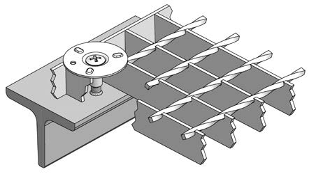
Abb. 14a Befestigung mit Halteflansch, Schweißbolzen
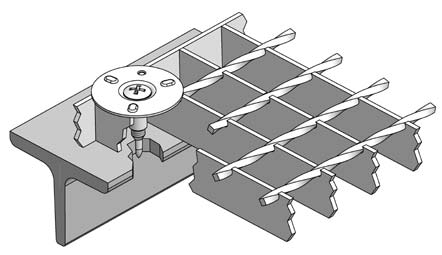
Abb. 14b Befestigung mit Halteflansch, Setzbolzen
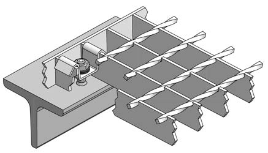
Abb. 14c Befestigung mit Haltebügel, Schweißbolzen, selbstsichernde Mutter
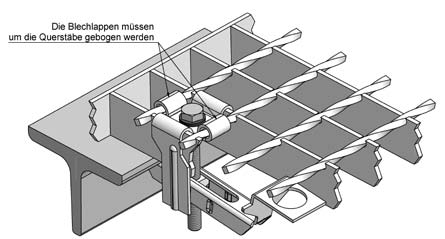
Abb. 14d Befestigungsoberteil mit Vertikalsteg als Sicherung gegen Verschieben in Tragstabrichtung, anwendbar bei Schweißpressrosten
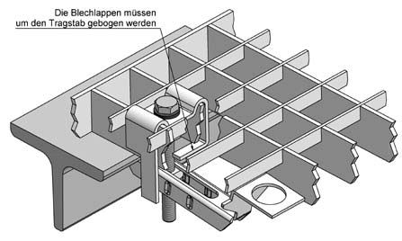
Abb. 14e Befestigungsoberteil mit Vertikalstegen als Sicherung gegen Verschieben in Tragstabrichtung, anwendbar bei Schweißpress-, Press- und Einsteckrosten
Abb. 15a – 15d: Befestigungen von Kunststoffgitterrosten
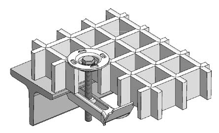
Abb. 15a Befestigungen ohne Verschiebesicherung, GFK-Rost gegossen
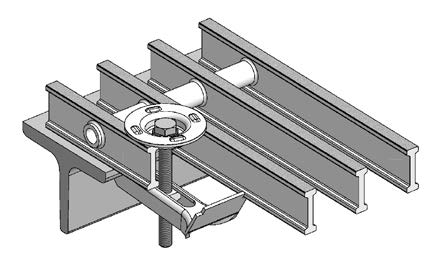
Abb. 15b Befestigungen ohne Verschiebesicherung, GFK-Rost pultrudiert
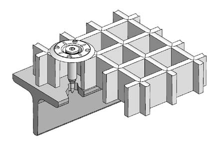
Abb. 15c Befestigung mit Setzbolzen, GFK-Rost gegossen
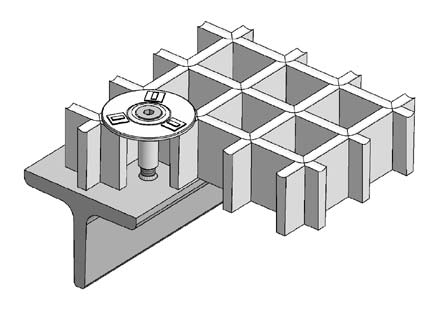
Abb. 15d Befestigung mit Schweißbolzen, GFK-Rost gegossen
Der Werkstoff der Befestigungen sollte auf das Material der Roste abgestimmt sein. Bei unterschiedlichen Metallpaarungen kann es zu Ionenwanderungen kommen, die die Korrosion begünstigen. Da Kunststoffroste oft in aggressiven Atmosphären eingesetzt werden, hat sich hier die Verwendung von Edelstahl-Befestigungen bewährt.
Blechprofilroste können durch Lagerung ihrer Enden in Profilen mit begrenzendem Vertikalsteg gegen Verschieben gesichert werden. Befestigungswinkel, die an den Vertikalstegen befestigt sind, sichern die Roste gegen Abheben (siehe Abb. 16a und 16b).
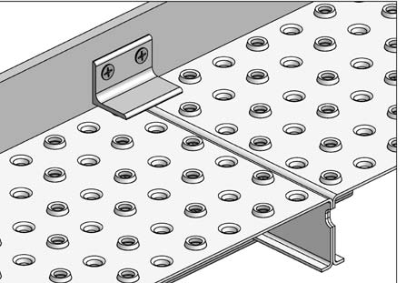
Abb. 16a Sicherung gegen Verschieben durch Vertikalsteg des Tragprofils, gegen Abheben durch Befestigungswinkel
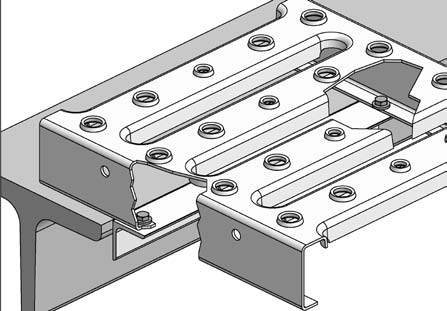
Abb. 16b Sicherung gegen Verschieben durch angeschraubten Anschlag
Bei einem Verbund mehrerer Blechprofilroste zu einem Element müssen die Schraubverbindungen gegen Selbstlösen gesichert sein (siehe Abb. 17).
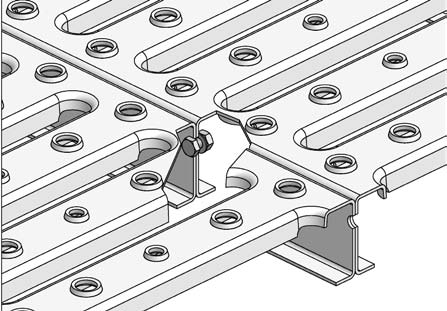
Abb. 17 Verbund zweier Blechprofilroste durch Verschraubung mit selbstsichernder Mutter
Blechprofilroste ohne ausreichende Queraussteifung sollten durch Distanzstücke unterstützt werden, um ein Durchbiegen der Lauffläche zu verhindern (Abb. 18). Bei ausreichender Quersteifigkeit, z. B. durch Formgebung der Trittfläche, ist eine direkte Verschraubung ohne Distanzstück möglich (Abb. 19). Auch hier sind die Verschraubungen unter Verwendung von selbstsichernden Muttern auszuführen.
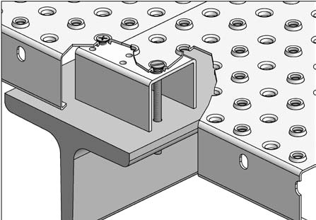
Abb. 18 Verbindung der Enden zweier Blechprofilroste auf dem Tragprofil mittels Distanzstück und Verschraubung
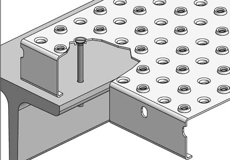
Abb. 19 Befestigung der Enden von Blechprofilrosten auf dem Tragprofil durch Verschraubung